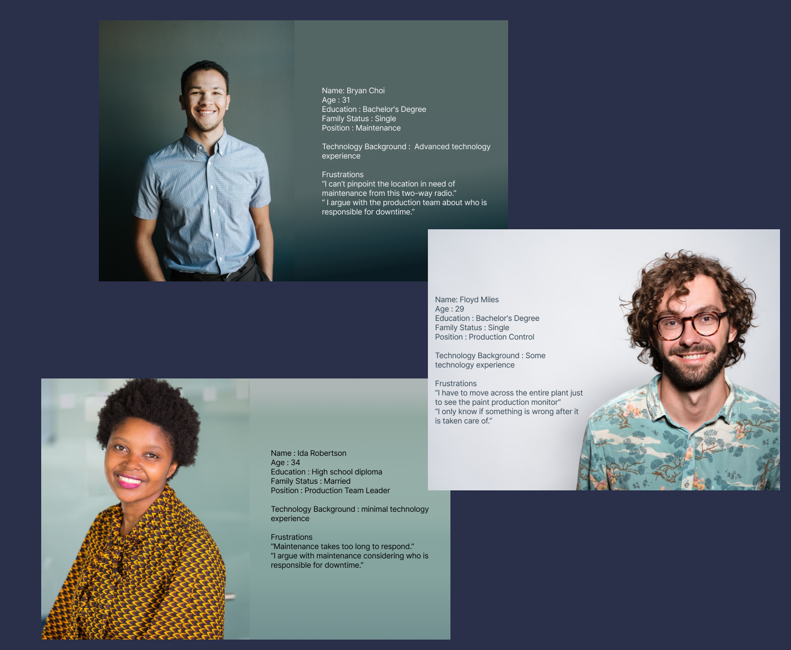
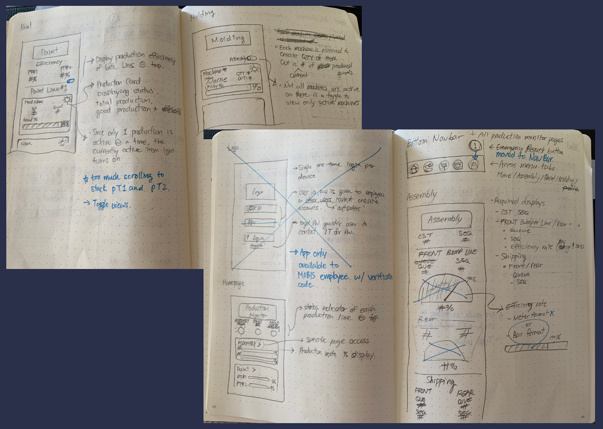
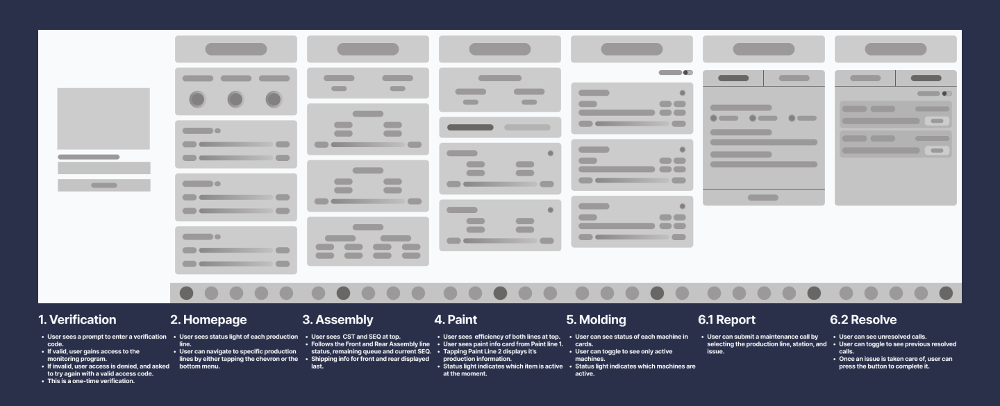

An app to solve production problems
Focused on efficiency, simplicity and profit
The Challenge
Efficiency is the most important goal of a manufacturing plant that produces over 3000 automobile parts a day. In order to keep track of the plant’s efficiency, Hyundai Mobis asked for a solution to increase productivity and reduce downtime.
My Role
User Research
- User interviews
- User feedback
Design
- UI
- Wireframe
- Prototype
User Research
To understand the pain points of the users, I conducted interviews with the employees of Hyundai Mobis’s plastic plant.
Pain point 1
There is no location to view ALL production status at once.
Pain point 2
It is difficult to hear through two-way radios.
Pain point 3
Imprecise verbal explanations given by the caller.
Pain point 4
Maintenance takes too much time to respond to calls.
Personas
Based on the research I was able to create 3 personas. These personas were referred to throughout the entire product development process. Personas are an educated representation of my intended target audience. Personas are not an actual individual.
Solution
- Create a monitoring app where users can see efficiency rates and status of different production lines through their mobile phone. → Eliminate the limit of only being able to obtain information at fixed locations.
- Text based maintenance calls with predefined location choices → Clarify issues and location to reduce response time.
Sketches and Ideation
Created sketches on how each screen would look. Improved convenient features and scrapped undesirable functions.
User flow
User flow map is created to see how the user would navigate throughout the app.
Wireframe
UI Design
Utilized the Roboto font family because of it's clear, legible numerals.
The color palette avoids vibrant colors and manages to convey a modern look without using strong
blacks and whites.

User Feedback
After creating the prototype, I conducted a user test session to gather feedback.
I liked how I was able to see the status of each production line in the main screen. It is very convenient and easy to use. It would be nice if you could add a detailed page for each of the molding machines.
- Production Control Member
The maintenance call function is a life changer. Communication is key when it comes to fixing problems. I believe this would reduce downtime significantly.
- Maintenance Crew Member
I always had a hard time trying to explain where maintenance is needed. It is now easier to pinpoint locations with this app.
- Production Team Leader